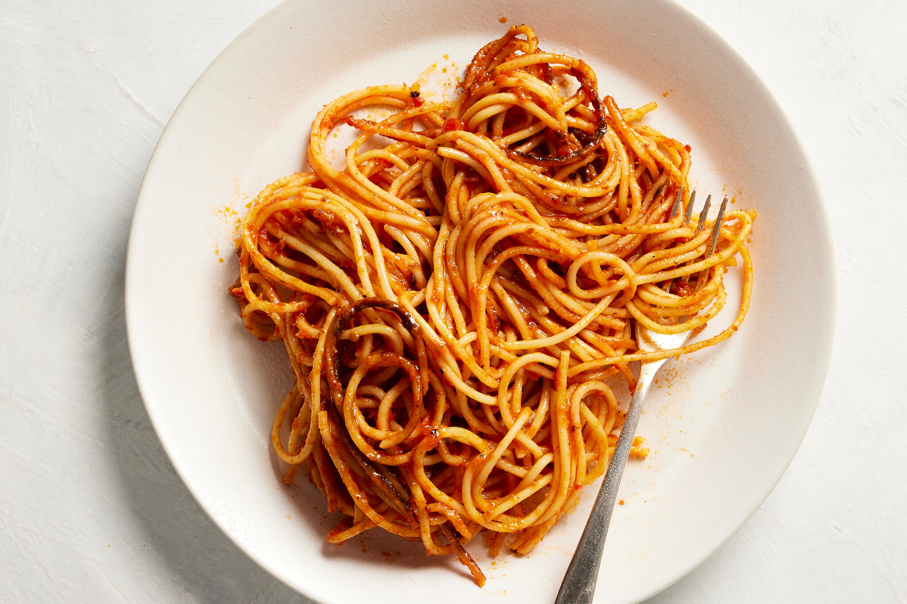

Spaghetti

Description
Sometimes, culinary magic doesn't need a bustling kitchen or a list of obscure ingredients.
This soul-warming pasta dish proves it beautifully, blending a handful of everyday wonders
into a symphony of pure comfort.
This masterpiece is more than just sustenance; it's a celebration of simplicity. Every step is
effortless and unpretentious, perfect for busy weeknights or lazy weekends. You can
practically throw the ingredients together, let the simmering sauce work its magic, and emerge
with a dish that leaves everyone speechless.
Ingredients
- 200g dried spaghetti pasta
- 2 tsp extra virgin olive oil
- 2 garlic cloves, thinly sliced
- Pinch dried chilli flakes
- 10 (325g) Coles raw Australian banana prawns, peeled (tails intact), deveined
- 3 medium tomatoes, deseeded, finely chopped
- 1 tbsp chopped fresh continental parsley leaves
Steps
-
Cook pasta in a large saucepan of boiling, salted water following packet directions, until
tender. Drain, reserving 1/4 cup cooking liquid.
-
Meanwhile, heat oil in a large frying pan over medium-high heat. Add garlic and chilli. Cook
for 1 minute or until fragrant. Add prawns. Cook, stirring, for 2 to 3 minutes or until pink
and cooked through. Add pasta, tomato and cooking liquid. Cook for 2 minutes or until heated
through. Season with salt and pepper. Stir through parsley. Serve.
Back to top
Back to the homepage